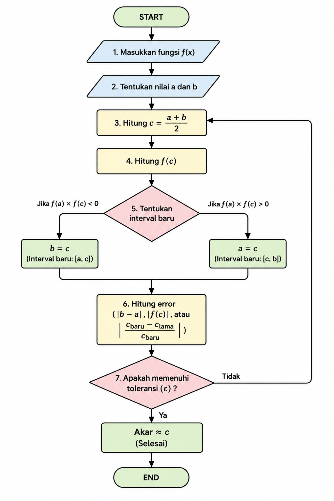

| Simbol | Keterangan |
|---|---|
| f(x) | Fungsi yang dicari akarnya |
| a | Batas bawah interval |
| b | Batas atas interval |
| c | Titik tengah interval |
| f(a) / f(b) | Nilai fungsi pada titik a / b |
| ε (Epsilon) | Toleransi Error |
| Iterasi | Jumlah pengulangan proses |

| b - a | < ε
| f(c) | < ε
| (c_baru - c_lama) / c_baru | < ε
| No | a | b | c | f(a) | f(b) | f(c) | Rentang Baru | Lebar Rentang | Galat Relatif |
|---|